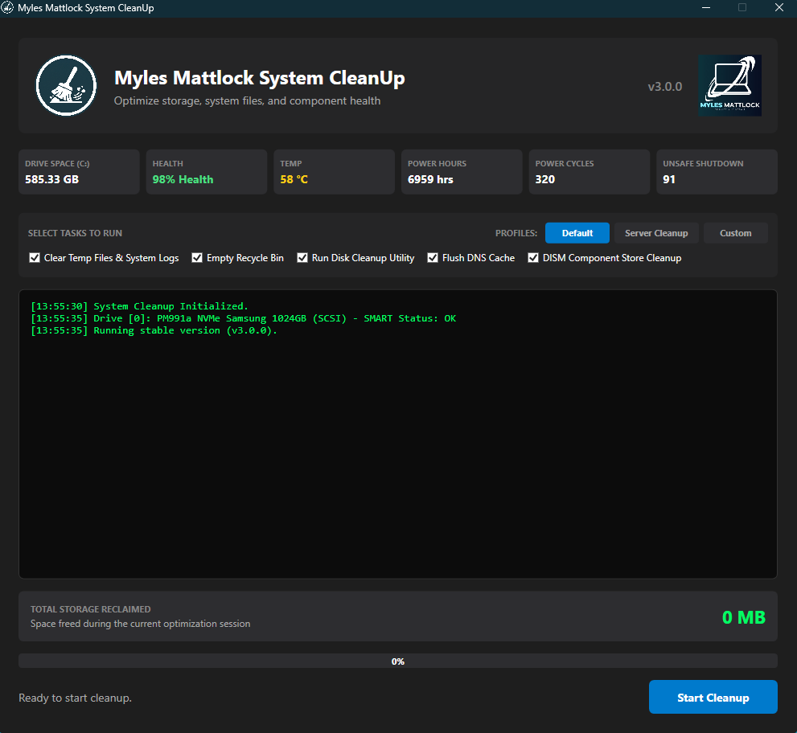

01
Clear the clutter
Remove temporary files, old logs, Windows downloads, Prefetch data, and other digital dust taking up room.
TEMP FILES / LOGSOne focused tool for clearing the clutter that slows your system down. Free space, fresh starts, and no mystery software running in the background.
Older releases →
Remove temporary files, old logs, Windows downloads, Prefetch data, and other digital dust taking up room.
TEMP FILES / LOGSFlush DNS, run Disk Cleanup, and optimize the Windows component store with the tools already on your machine.
DNS / DISM / CLEANMGRChoose a guided cleanup or a no-prompt run. Logs are written locally, and stable releases are checked through GitHub.
LOGS / UPDATES / CHOICECleanUp runs as a straightforward Windows utility and elevates when it needs to. See each stage as it happens, then get a simple report of what was reclaimed.
CleanUp Tool is free, open source, and made for the Windows machines that need a little less baggage.
View source releases ↗